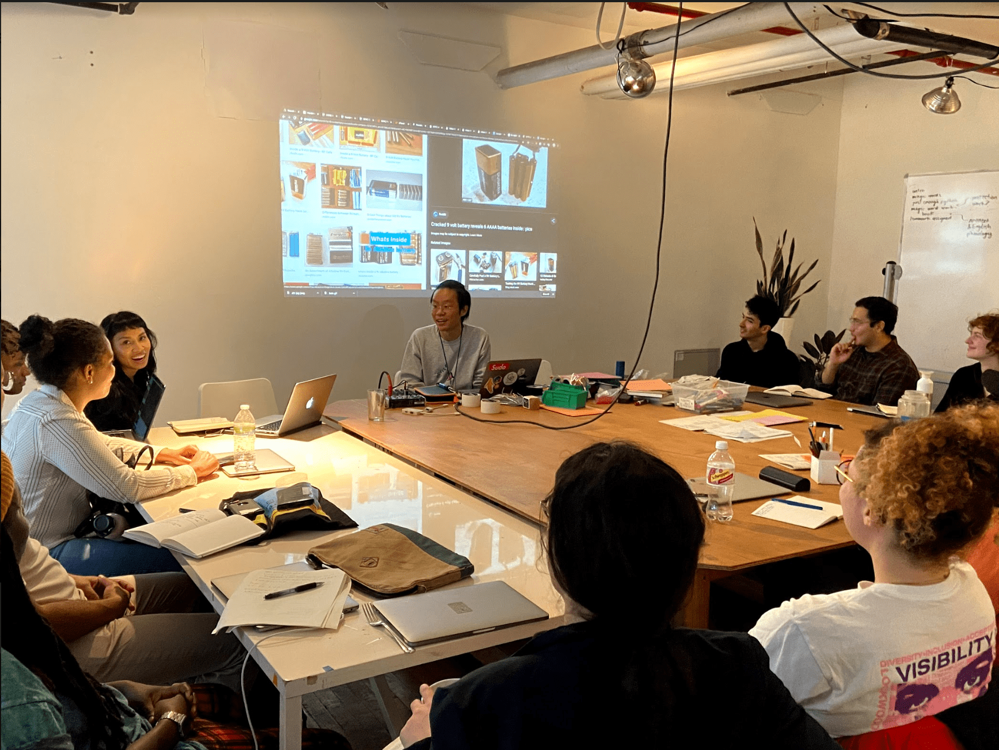
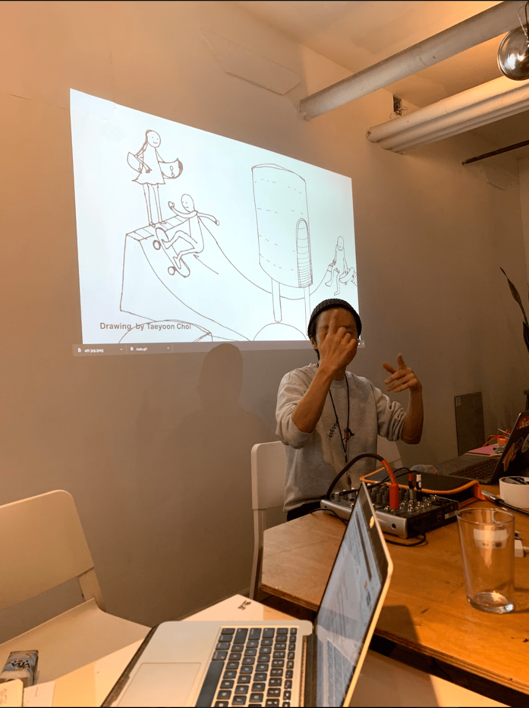
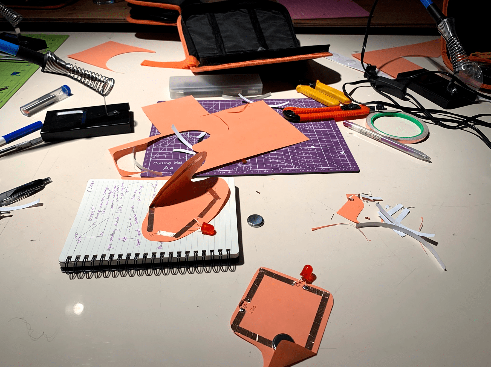

Day 6: Radical Hardware (Transistor to CPU)
taught by Taeyoon Choi
Syllabus 0% electronics, 30% art, 30% visual storytelling
So thankful to have been a part of the first hardware class at Code Societies! This class was a perfect way to merge thoughts about code and computation and its relationship to its materiality and waste. This class moves the discussion beyond the screen and forges new relationships both with and without our devices.
Although I had taken a class where I learned about physical computation in the past, this was the first time I started to think about how this topic is related to my everyday life, my connection with materials, and power.
Taeyoon taught us about circuits and other electronic components through the imagery of a skatepark. This served as a reminder to me that electronics can be fun, approachable, and is relatable to our everyday life. Even when thinking about power, how can we make connections between power in electronics and power as a societal structure? Both are about the differences between one state and another state. And electrical power is also about societal power
.When thinking about our phones, for example, the batteries are not as easy to replace as older phone models were. In the past, I remember being able to quickly take the battery out in seconds and replace it with a new cheap battery. Additionally, because new products are continuously being released and we are incentivized to trade our phones in or buy newer models, instead of figuring out how to repair our electronics, many choose to discard them. Sometimes discarding feels easier.
To teach us all these concepts and re-enact what we learned in our skatepark / the playground of electronics, we created paper circuits using conductive tape, resistors, LEDs, and a power source such as a battery.
The circuits we built were relatively easy to make and made out of affordable materials. What makes them also special is that they can be a unique and powerful gift to give to someone. Immediately, I thought about the potential for a paper circuit to increase connection, spread messages of care, and create delight.
How could we show care and love through electronics? Through light? Through gifts?
What was really special about this particular class was actively working alongside my peers and helping each other troubleshoot along the way. Although we were using the same schematic model for our circuits, there were differences in the way we cut our paper, where we placed our conductive tape, if we created any designs on our paper, or wrote special notes. This all speaks to the opportunity to learn about physical computation and expand upon that knowledge to create more personalized hardware that we feel connected to.

Additionally, this class made me think deeply and consider how our relationship to e-waste and materials is oftentimes one that exists on rocky terms. Growing our understanding of what is happening inside the encasement of our devices can dramatically affect and alter our relationships with electronics and increase our own connections, confidence, and curiosity.
It does make sense that we discard instead of repair when the electrical components of our devices are hidden in our metallic encasements with specialized screws used to create additional obstacles from breaking into our devices. In a previous blog post about surveillance, I mentioned the use of selectively revealing and selectively hiding information as a manipulation tactic often used by those in power and tech companies. This feels similar to that in many ways. If we cannot see what’s occurring, if we don’t know how the wires are connected, if we cannot complete the circuit in our minds, if we view things we don’t know as simply magic and feel distant from the knowledge, what does that do to us?
And although these issues of waste and power are oftentimes on my mind, I cannot help but wonder about my own relationship with my physical computation projects. Where do those electrical components come from and how long did they travel for me to begin to learn and understand electronics and physical computation?
It is a messy entanglement and one that feels difficult to completely divest from, but I do hope that through understanding, perhaps there can be a time where we can establish better practices with reusing electrical components and repairing our devices and others.
Written by Cy X